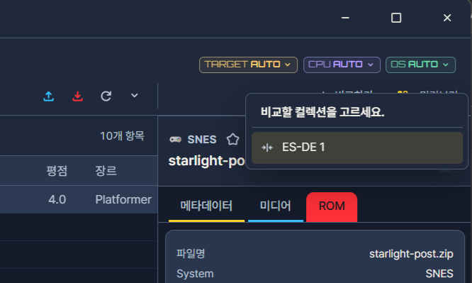
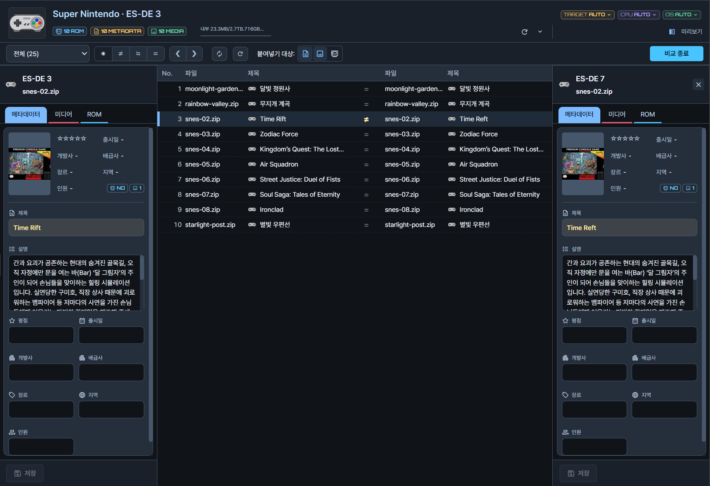

게임목록 비교
두 게임목록의 같은 게임을 나란히 놓고 정보와 미디어의 차이를 한눈에 봅니다. 차이를 확인한 뒤에는 선택한 게임의 메타데이터를 다른 쪽에 채우거나, 한쪽에만 있는 게임을 다른 쪽으로 복사할 수 있습니다. 직접 정리한 게임목록과 내려받은 게임목록을 맞춰 보거나, 같은 게임이 두 게임목록에서 서로 다르게 입력된 곳을 찾을 때 유용합니다. 비교에 사용하는 게임목록은 탭으로 열어 둔 컬렉션이어야 합니다.
이 페이지는 비교 화면의 구성, 같은 게임으로 묶는 규칙, 상태 표시의 의미, 전송 규칙을 순서대로 설명합니다.
용도
- PC에 정리한 게임목록과 다른 게임목록의 차이를 한눈에 볼 때: 어느 게임이 어느 쪽에만 있는지, 어느 항목이 서로 다른지 상태별로 좁혀 볼 수 있습니다.
- 한쪽에만 있는 설명·커버를 다른 쪽에 채울 때: 정리가 잘 된 쪽에서 비어 있는 쪽으로 보냅니다.
- 두 게임목록의 제목·평점이 서로 다른 게임을 찾을 때: 다른 메타데이터 필터로 좁혀 하나씩 확인합니다.
- 한쪽에만 있는 게임을 다른 쪽으로 복사할 때: 한쪽에만 있음으로 표시된 게임을 골라 보냅니다.
몇 개의 게임만 정해 보내려면 복사하기·붙여넣기가 더 간단하며, 게임목록 전체를 기준 게임목록에 맞추려면 컬렉션에서 가져오기가 효율적입니다.
사전 준비
- 비교할 컬렉션 두 개를 탭으로 열어 둡니다. 열려 있지 않은 게임목록은 상대로 고를 수 없습니다.
- 받는 게임목록의 목록 폴더와 미디어 폴더를 복사해 둡니다. 전송은 충돌 확인 없이 덮어쓰기이므로, 폴더를 복사해 두면 결과가 마음에 들지 않을 때 원래대로 돌릴 수 있습니다.
- ROM까지 보낼 때는 받는 쪽의 남은 공간과 기기 연결을 확인합니다.
- 비교는 시스템과 파일명을 기준으로 게임을 연결하므로, 필요하면 같은 게임으로 연결하는 기준을 먼저 읽어 두는 편이 좋습니다.
메뉴와 적용 대상
기준 Collection의 비교하기에서 상대 목록과 전체 또는 시스템 범위를 지정합니다. 비교 화면에서 게임을 선택하면 양쪽 상세 정보를 함께 읽고 편집할 수 있습니다. 자료를 보내려면 범위와 화살표 방향을 지정합니다. 전송은 선택한 범위의 기존 값을 덮어쓰며, 직접 편집은 각 목록의 저장 버튼으로 기록합니다.


- 1상대 컬렉션
화면 구성


- 1양쪽 컬렉션·시스템
- 2표시할 항목
- 3선택 게임·상세 비교
- 4왼쪽·오른쪽 전송
- 5자료 범위
- 6Swap·새로고침
- 7비교 종료
위 그림의 번호와 아래 표의 번호가 서로 대응합니다.
| 번호 | 항목 | 하는 일 |
|---|---|---|
| ① | 양쪽 컬렉션·시스템 | 비교하는 게임목록과 시스템을 보여 줍니다. 기준과 상대가 원하는 게임목록인지 가장 먼저 확인합니다. 전송 방향을 혼동하지 않으려면 이 표시를 기준으로 왼쪽과 오른쪽을 구분합니다. |
| ② | 표시할 항목 | 결과 상태로 목록을 좁힙니다. 모든 항목, 다른 메타데이터, 미디어만 다른 항목, 같은 항목으로 나뉩니다. 항목이 많을 때 확인할 대상만 남기는 데 사용합니다. |
| ③ | 게임 선택·상세 비교 | 고른 게임의 양쪽 제목·설명·평점과 자료 보유 상태를 나란히 보여 줍니다. 차이가 나는 값에는 강조 표시가 붙습니다. |
| ④ | 왼쪽·오른쪽 전송 | 선택한 게임의 자료를 화살표 방향으로 보냅니다. 마우스를 올리면 보내는 게임목록·받는 게임목록·선택 개수·범위가 표시되므로, 실행 전에 방향이 맞는지 확인할 수 있습니다. |
| ⑤ | 자료 범위 | 메타데이터 / 메타데이터+미디어 / 메타데이터+미디어+ROM 중에서 전송에 포함할 자료를 고릅니다. |
| ⑥ | Swap·새로고침 | Swap은 양쪽 기준을 서로 바꾸고, 새로고침은 현재 상태로 다시 비교합니다. 다른 프로그램이나 다른 탭에서 게임목록을 고쳤다면 새로고침으로 최신 상태를 반영합니다. |
| ⑦ | 비교 종료 | 확인 창을 거쳐 일반 게임목록 화면으로 돌아갑니다. |
같은 게임으로 연결하는 기준
비교는 양쪽 게임목록에서 같은 게임을 찾아 한 행에 한 쌍씩 묶어 보여 줍니다. 묶는 규칙은 비교 방식에 따라 다릅니다.
| 비교 방식 | 한 쌍으로 묶는 조건 |
|---|---|
| 전체 게임목록 비교 | 시스템과 파일명이 모두 정확히 같은 항목. 파일명은 확장자를 포함하고 대소문자를 구분합니다. |
| 양쪽 시스템을 하나씩 지정 | 선택한 두 시스템 안에서 파일명이 정확히 같은 항목. 시스템 폴더명이 달라도 비교됩니다. |
- 연결된 항목은 ROM 파일의 보유 여부·크기·해시가 달라도 같은 행에 표시됩니다. ROM 상태는 ROM 탭에서 봅니다.
- 파일명이 달라 연결되지 않은 항목은 한쪽에만 있음으로 나옵니다.
- 서로 다른 프론트엔드 형식의 게임목록을 비교할 때에는 시스템 폴더명이 다를 수 있습니다. 이때에는 시스템을 하나씩 지정하는 방식이 연결에 유리합니다.
- 한글판·영문판처럼 파일명이 다른 같은 게임은 자동으로 연결되지 않습니다. 이런 게임은 직접 확인한 뒤 복사하기·붙여넣기나 편집 기능으로 정리합니다.
같다·다르다·비슷하다
연결된 한 쌍은 아래 네 가지 상태 중 하나로 표시됩니다.
| 표시 | 뜻 |
|---|---|
| 같다 (=) | 비교 대상 게임 정보와 미디어 종류·파일 크기가 모두 같습니다. |
| 다르다 (≠) | 비교 대상 게임 정보 중 하나 이상이 다릅니다. 미디어 차이가 함께 있을 수도 있습니다. |
| 비슷하다 (≒) | 게임 정보는 같고 미디어만 다릅니다. 한쪽에만 있는 종류가 있거나 같은 종류의 파일 크기가 다를 때입니다. |
| 한쪽에만 있음 | 반대쪽에 파일명이 일치하는 항목이 없습니다. 왼쪽만·오른쪽만으로 나뉩니다. |
비교하는 정보는 제목, 설명, 장르, 개발사, 배급사, 출시일, 지역, 인원, 평점입니다. 값의 앞뒤 공백을 지운 문자열로 비교하고, 값이 없으면 빈 값으로 봅니다. 즐겨찾기와 플레이 횟수는 판정에 넣지 않습니다. 따라서 즐겨찾기만 다른 게임은 "같다"로 표시됩니다.
미디어는 종류별 보유 여부와 파일 크기로 비교합니다. 크기가 같은 서로 다른 그림도 같게 보일 수 있으니, 실제 내용은 양쪽 미리보기로 대조합니다. "같다"는 ROM 내용까지 같다는 뜻이 아닙니다.
필터가 묶는 항목
표시할 항목 필터는 상태 표시와 일대일로 대응하지 않고, 확인 목적에 따라 항목을 묶습니다.
| 필터 | 들어 있는 항목 |
|---|---|
| 모든 항목 | 양쪽 전체 비교 결과 |
| 다른 메타데이터 | 게임 정보가 다른 항목과 한쪽에만 있는 항목 |
| 미디어만 다른 항목 | 정보는 같고 미디어만 다른 항목(≒) |
| 미디어 차이 | 정보 차이와 관계없이 미디어가 다른 연결 항목 |
정보를 정리하는 작업은 다른 메타데이터, 커버나 스크린샷을 맞추는 작업은 미디어만 다른 항목이나 미디어 차이로 시작하면 확인할 대상이 줄어듭니다. 이 페이지의 상태 표시에는 "같은 항목"만 모아 보는 필터가 별도로 있으며, 위 표의 네 가지 외 필터 구성은 화면에서 확인하시기 바랍니다. 필터는 모든 항목, 다른 메타데이터, 같은 항목, 왼쪽에만, 오른쪽에만, 양쪽 값 다름, 미디어만 다름, 미디어 차이로 구성됩니다. 다른 메타데이터는 양쪽 값이 다른 항목과 한쪽에만 있는 항목을 함께 표시합니다.
양쪽 상세 탭과 편집
- 어느 쪽에서든 메타데이터·미디어·ROM 탭을 바꾸면 반대쪽도 같은 탭으로 바뀝니다. 양쪽을 같은 기준으로 비교하기 위한 동작입니다.
- 정보와 다른 미디어에는 강조 표시가 붙고, 반대쪽에 항목이 없으면 "자료 없음"이 나옵니다.
- 제목·설명 같은 편집은 편집한 쪽의 저장 버튼으로 그쪽 컬렉션에 저장합니다. 양쪽에 저장 버튼이 따로 있으므로, 한쪽만 저장하면 다른 쪽은 그대로입니다.
- 저장 전 입력한 값은 같은 쪽 미디어 탭 요약에도 반영됩니다. 탭을 함께 바꿔도 반대쪽 입력값이 자동으로 바뀌지는 않습니다.
전송
상세 탭은 보는 화면이고, 자료 범위가 전송에 포함할 자료를 정합니다. 미디어 탭을 보고 있어도 전송 범위는 따로 고른 값이므로, 전송 전에 자료 범위를 다시 확인합니다.
| 자료 범위 | 보내는 것 |
|---|---|
| 메타데이터 | 제목·설명·평점 등 게임 정보 전체 |
| 메타데이터 + 미디어 | 게임 정보와 커버·스크린샷·동영상 |
| 메타데이터 + 미디어 + ROM | 위 내용과 실제 게임 파일 |
- 오른쪽 화살표는 왼쪽 자료를 오른쪽 게임목록으로, 왼쪽 화살표는 오른쪽 자료를 왼쪽 게임목록으로 보냅니다.
- Swap으로 좌우를 바꾸면 화살표 방향도 다시 확인합니다.
- 메타데이터를 고르면 설명 한 필드가 아니라 해당 범위의 게임 정보 전체가 적용됩니다. 설명만 보내고 싶더라도 제목과 평점 등이 함께 바뀝니다.
- 일반 붙여넣기와 달리 충돌 선택 창 없이 덮어씁니다. 되돌리기 제한 확인 창이 나오면 안내를 읽고 동의한 뒤 진행됩니다.
- 설명이나 평점 같은 일부 필드만 가려 보내거나 받는 쪽의 기존 값을 보존하려면 비교 화면의 전송이 아니라 복사하기·붙여넣기의 채우기를 사용합니다.
전송 후
전송이 끝나면 변경된 상태로 결과를 다시 계산합니다. 선택한 범위의 차이가 해소되면 항목 상태와 필터별 개수가 바뀝니다. 메타데이터만 보낸 뒤 미디어 차이가 남으면 ≒로 표시될 수 있고, 필터에 더 이상 해당하지 않는 항목은 목록에서 사라질 수 있습니다. 일부가 실패했거나 건너뛰었다면 작업 결과의 사유를 확인합니다.
문제 해결
같은 게임이 연결되지 않습니다.
양쪽의 시스템·파일명을 대조합니다. 파일명이 한 글자만 달라도, 확장자나 대소문자가 달라도 연결되지 않습니다. 시스템을 하나씩 지정하거나 새로고침하면 결과가 달라질 수 있습니다.
전송 버튼을 누를 수 없습니다.
먼저 게임목록에서 게임을 선택합니다. 버튼의 안내에 선택 개수와 보내는·받는 게임목록, 포함 자료가 표시됩니다.
전송했는데 차이가 그대로 남아 있습니다.
자료 범위를 확인합니다. 메타데이터만 보냈다면 미디어 차이는 해소되지 않으며 ≒로 남을 수 있습니다. 일부가 건너뛰어졌거나 실패한 경우에도 남으므로 작업 결과의 사유를 확인합니다.
일부 파일만 실패했습니다.
작업 결과의 오류와 대상 경로를 확인합니다. 복구 필요 안내가 있으면 원본·백업을 지우지 않고 작업 이력과 복구에서 처리합니다.
가져왔는데 기기의 게임 화면이 그대로입니다.
앱에서는 받는 컬렉션의 저장 결과를 먼저 확인합니다. 기기의 프론트엔드가 자체 게임목록을 유지한다면 그 프로그램에서 게임목록을 다시 읽어야 합니다.